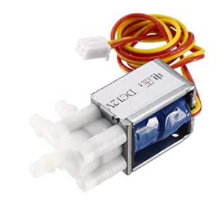
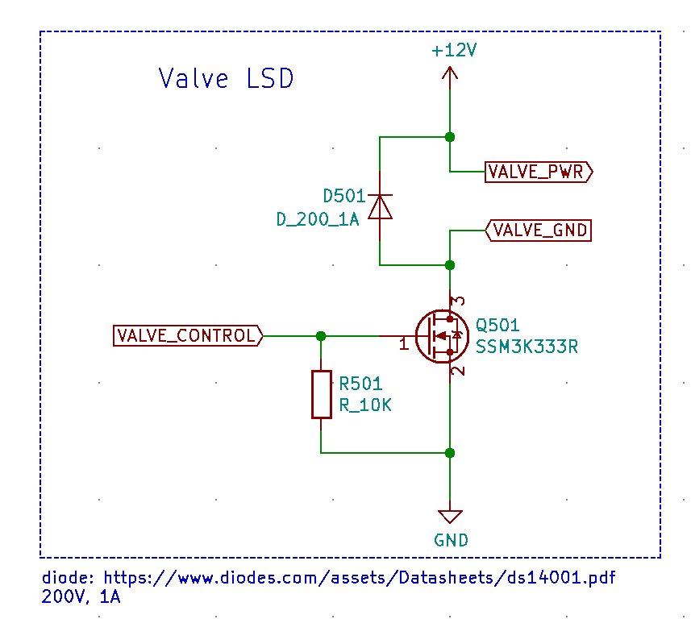
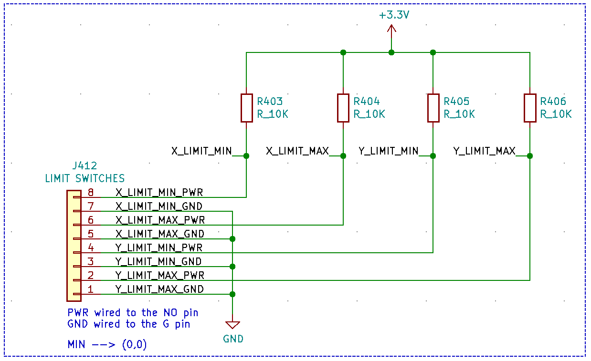
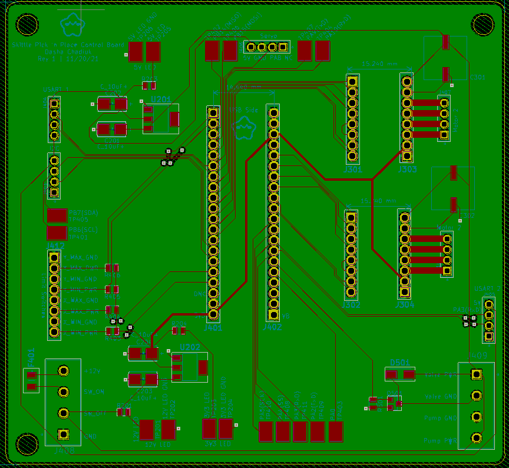
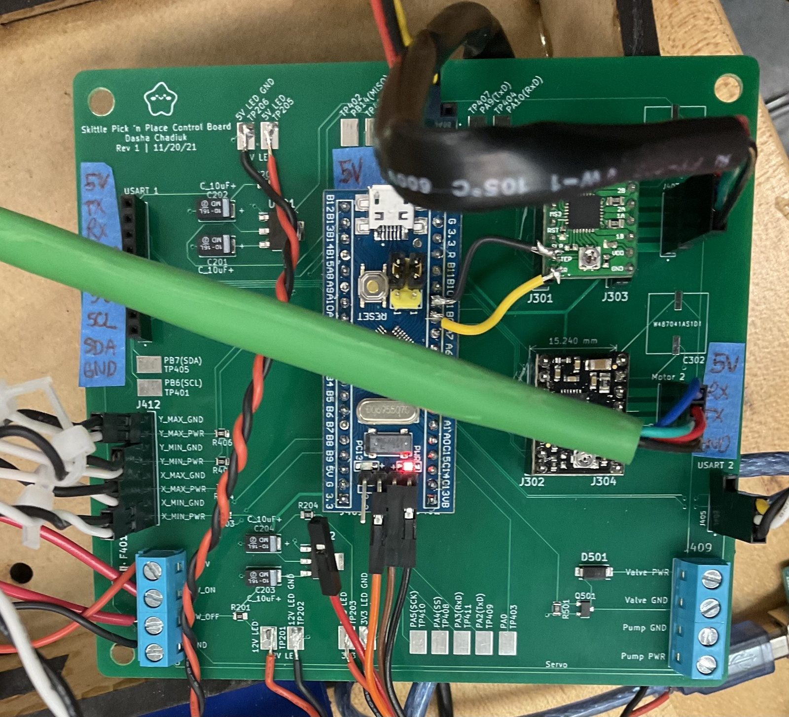
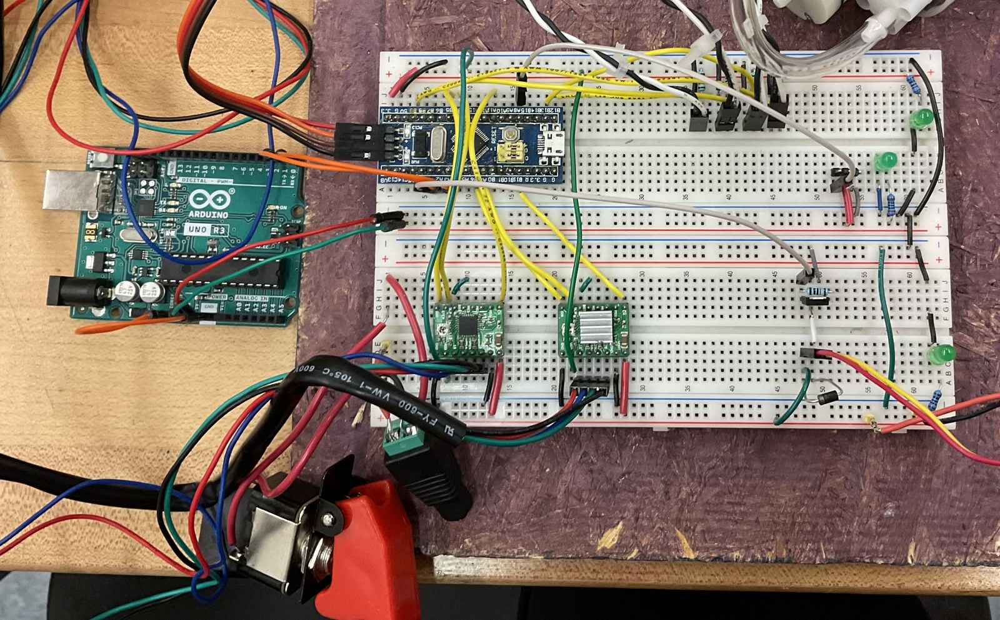

The electrical system for the Skittle PNP is in charge of providing power to all components, electrically controlling the solenoid air valve, and providing an easy interface between firmware and the electromechanical devices in the system, such as the motors and servos. The system features a custom interface PCB used to house the STM32 development board, A4988 stepper motor drivers, and linear power regulators that take a 12V input and provide 3.3V and 5V to all components in the system.
Power
All components are powered by a 12V DC power supply, which goes through a power-on switch before powering all devices in the system (Amazon Link). The red casing prevents someone from accidentally starting the system and this switch doubles as an emergency stop switch.
Linear Regulator VS Switching Regulator
For our applications, we decided to use linear regulators rather than switching regulators. To save on time and cost, we chose to use two linear regulators to step down 12V to 3.3V and 5V. We already had access to both regulators in the stock room. We don't have a need for high efficiency so a linear regulator seemed like the better choice.
| Efficiency |
Low to Medium-High (depending on the difference between Vin and Vout) |
High |
| Complexity |
Low |
Medium to high |
| Size |
Small (for our applications) |
Small (but larger than a linear regulator since it would require more external components) |
| Cost |
Low |
Medium to high |
| Ripple/noise/EMI |
Low |
Medium to high |
Source: https://www.renesas.com/us/en/products/power-power-management/linear-vs-switching-regulators
The schematics for the regulators are identical, except for the regulator itself. We use the LM1117-3.3 and LM1117-5 800-mA, Low-Dropout Linear Regulators (Datasheet).
Valve Low-Side Drive
The valve we used is a 2 position 3-way normally open solenoid valve (Amazon Link, see image below). The valve is connected to a Diaphragm vacuum pump (Amazon Link) using 1/4" tubing (Amazon Link) and both are powered by a 12VDC power supply. The vacuum pump remains powered while the valve controls the airflow that allows the skittle to be picked up, moved to the desired location, and dropped. When the valve is supplied with 12V, the airflow is directed through one tube; when the valve is not powered, the airflow is redirected through the other tube.

The schematic shows the circuitry that allows the airflow within the valve to be controlled using firmware commands. We are using the TOSHIBA SSM3K333R N-channel MOSFET (Digikey Link) to drive the valve using a low-side drive. The STM32 provides 3.3V at the gate, which is higher than the minimum gate threshold voltage Vth = 1.3V. Since the FET is used as a switch, we connected a flyback diode in parallel with the solenoid valve to prevent a reverse polarity voltage pulse that could occur when the "switch" is turned off. Additionally, we added a 10kOhm bias resistor to drive the voltage at the gate low and prevent it from floating when the STM32 is not driving the FET.

Limit Switches
We use four normally open limit switches at the limits of the x and y axes of the gantry. When the switches are not pressed, the 10kOhm pull-up resistors set the corresponding STM32 pins to 3.3V. When the switch is pressed, the MCU detects a falling edge, and an interrupt is triggered by the firmware to stop the end effector.

Communication
We are using the UART communication protocol to communicate between the firmware and the software. The STM32 also allows us to use the I2C communication protocol, which we need to talk to the LCD screen.
Stepper Motors and Stepper Motor Drivers
The motors we used are NEMA 17 Stepper Motors (Amazon Link) and the stepper drivers we used are Pololu A4988 Stepper Drivers (Pololu Link). The stepper driver purchasing link includes the corresponding documentation we used to set the driver boards up.
Skittle PNP Interface PCB
The electrical system is housed primarily on a PCB which makes harnessing and interfacing with external components easier. The PCB has a lot (a lot!) of empty space which would be improved in future iterations. However, having space on the pcb makes it easier to scratch off unintended traces without accidentally removing other traces. In addition, any unused stm32 pins connect to a test point (some exposed copper) which allows us to add more components or switch pins if there is a need.

For example, our skittle feeder system requires a servo motor to reload the skittles. The PCB was designed and shipped after that requirement was determined, so we used the additional pins to power and drive the servo.
Since this is the first revision of the PCB, we encountered some issues:
- The STM32 pins used for the STEP and DIR pins of the stepper motor drivers did not work as intended (even though the STM32 should be able to support both). To combat this, we scratched off the MS1, MS2, and MS3 traces for one of the motors and used two adjacent pins for the STEP and DIR pins.
- Although we were not using the MS1, MS2, and MS3 pins on the motor drivers, connecting them to the pins on the STM32 gave us some issues with the microstep resolution. Since we did not need these pins, we scratched the traces off. One reason for this problem may be that we did not include any pull-up or pull-down resistors and instead left the pins floating. The table to the right shows how the state of each MSx pins corresponds to the microstep resolution.
- Although we have the exposed copper to provide extra pins (we didn't want to purchase more connectors), the servo we added for the skittle feeder had trouble interfacing with them. We had to use the pins on the connector for I2C instead. This works as a temporary fixed because we have not implemented the LCD screen yet, however, future iterations of the PCB should account for this change and issue.
- The silkscreen was not very comprehensive and we had to constantly check the datasheet for the pinouts of the connectors. In the future, we should make sure to label everything clearly to avoid accidentally shorting any wires. As placeholder labels, we took some painters tape and taped it onto the board. This is where some of the space on the board came in handy.

Development Stages
Prior to receiving the PCB, we tested most of the circuity on a breadboard. Unfortunately, we discovered some issues with the pins of the microcontroller only until after the PCB had been made and shipped. In the future, it would be best to test as much as possible on the breadboard before moving onto PCB production.
One of our primary concerns was getting the solenoid valve control to work. We found an N-channel MOSFET and a diode that had speccs that were similar enough to the ones we intended to use on the PCB. Both were available to us in the university EE stock room.

At this stage, we were using multiple power supplies to power all components (12V DC power supply, Arduino for 5V, and either the Arduino for 3.3V or the STM32). Since we were still in the debugging stage, this strategy was sufficient.
Next Steps
Given more time, here are the things we would do to improve our electrical system (and other quality of life things):
- Clean up the wires outside the enclosure and make a harness that stays out of the way of the moving end effector.
- Clean up and improve the silkscreen on the PCB.
- Adjust the pinout on the PCB to take into account the issues we encountered.
- Reconsider using a switching converter for improved efficiency, especially for the 12V - 5V step; we want to avoid generating a lot of heat, which is what occurs with the linear regulators. As for 3.3V, we could add a 5V-3.3V linear regulator, although the benefits and drawbacks of doing so would need to be explored further (especially if we already have one converter stepping down 12V).
- Fix the issue with the microstepping pins on the stepper drivers in case these pins become useful. This would include adding a pull-up or pull-down resistor on some or all pins depending on the need.
- Remake the PCB that doesn't have a lot of empty space (that is not used).